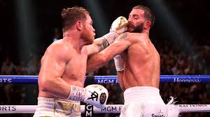

Regresar
Box
El boxeo (del inglés boxing), también denominado en ocasiones2 boxeo inglés, o pugilismo y comúnmente conocido como box, es un deporte de combate y un arte marcial345 en el que dos contrincantes luchan utilizando únicamente sus puños con guantes, golpeando a su adversario de la cintura hacia arriba, dentro de un cuadrilátero especialmente diseñado para tal fin; la pelea se lleva a cabo en breves secuencias de lucha denominadas asaltos y de acuerdo a un preciso reglamento, el cual regula categorías de pesos y duración del encuentro, entre otros aspectos.
Aunque el término boxeo comúnmente se atribuye al «boxeo inglés», en el que solo intervienen los puños, el mismo se ha ido desarrollando de diversas formas en diferentes áreas geográficas y culturas del mundo. En términos globales, el "boxeo" hoy en día también es un conjunto de deportes de combate centrados en el golpe, en el que dos oponentes se enfrentan en una pelea usando al menos los puños y posiblemente involucrando otras acciones como patadas, codazos, rodillazos, cabezazos, dependiendo de las reglas. Algunas de estas variantes son el boxeo con nudillos desnudos, el kickboxing, el muay-thai, el lethwei, el savate o el sanda. Las técnicas de boxeo se han incorporado a muchas artes marciales, entrenamiento militar, autodefensa y otros deportes de combate.
Después de la inclusión en los Juegos Olímpicos en la Antigüedad del siglo vii, la primera codificación de las normas que regulan los encuentros de boxeo se remonta a 1743,6 mientras que las reglas todavía vigentes fueron establecidas en 1889 por el marqués de Queensberry, quien entre otras cosas introdujo el uso de los guantes.
Tradicionalmente ha sido considerado como una práctica deportiva exclusivamente masculina, aunque también existan mujeres que practiquen este deporte. El reconocimiento de los derechos de las mujeres y los avances en la lucha contra la discriminación, han permitido que en las últimas décadas se registrara un auge del boxeo femenino, por lo que los Juegos Panamericanos de 20117 y los Juegos Olímpicos de Verano de 2012 incluyeron el boxeo femenino en varias categorías.8
Este famoso deporte ha sido usado como referencia para diversos proyectos cinematográficos como por ejemplo, las sagas de largometrajes de Rocky o Creed.
